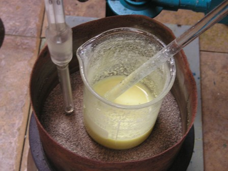
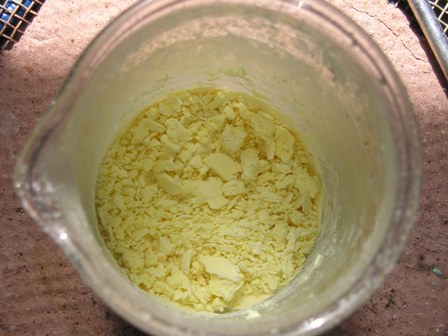
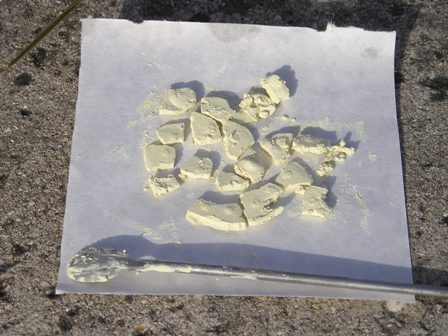

Eccoci alla fase 2, meno impegnativa della prima ma non banale nemmeno questa.
Una volta in possesso dell'acido 3-nitroftalico (ved. sintesi nella Fase 1) occorre trasformare questo in:
5-nitro-2,3-diidro-1,4-ftalazinadione con la procedura seguente:
Materiale occorrente:
- acido 3-nitroftalico
- idrazina solfato
- glicerina
- sodio idrossido
Occhio all'idrazina ed ai i suoi sali: sono sostanze tossiche e cancerogene, da maneggiare con le dovute cautele!
 - in un becker da 100 ml porre 4,2 g di acido 3-nitroftalico, 5 ml di acqua e qualche goccia di fenoltaleina.
- in un becker da 100 ml porre 4,2 g di acido 3-nitroftalico, 5 ml di acqua e qualche goccia di fenoltaleina.
Neutralizzare esattamente l'acido con NaOH al 25% (ne servono circa 7 ml) procedendo lentamente verso la fine per non eccedere e fermarsi esattamente al punto di viraggio. Tornare indietro poi leggermente aggiungendo una puntina di nitroftalico fino a decolorazione della fenolftaleina.

Aggiungere a questo punto 2,6 g di idrazina solfato NH2-NH2.H2SO4) (attenzione, guanti da questo punto in poi!), mescolare e riscaldare fino ad evaporazione a secchezza, magari su bagno di sabbia (io ho evaporato a fuoco diretto con reticella, ma stando ben attento a non sovrariscaldare).Il liquido all'inizio giallo limpido diventa sempre più viscoso, ci vuole pazienza e continuare a mescolare; l'aspetto passa da viscosità e colore tipo "uovo sbattuto" a color crema-beige alla fine.

Quando il residuo è ben secco ma non sovrariscaldato, staccarlo dal vetro del becker al quale può aderire fortemente (io ho usato una spatolina inox ben affilata). Polverizzare il prodotto in un mortaio (sempre guanti!) e porlo in un becker da 50 ml con 10 ml di glicerina. Da qui in poi inizia una variante rispetto alla fonte "ufficiale" (OrgSyn, che usa invece la tetralina, sostanza estremamente improbabile da trovare in lab).Scaldare la miscela su bagno di sabbia a 170°-180° (la sabbia ad una decina di gradi in più) per due ore mescolando ogni tanto e poi lasciar raffreddare. Alla fine la miscela è sempre color beige, non è per niente scura come si legge in certe sintesi.
Aggiungere 40 ml di acqua, mescolare e filtrare aspirando bene per rimuovere il più possibile la glicerina ed il solfato di sodio formatosi. Lavare il residuo con altre due porzioni da 5 ml di acqua e lasciar asciugare all'aria o meglio in forno a 80-90°.

La resa è di circa 3 g (80%) di 5-nitro-2,3-diidro-1,4-ftalazinadione, che si presenta come una polvere amorfa di colore beige chiaro.
Mettiamo via questo "dione" perchè nella Fase 3 gli verrà ridotto il gruppo nitrico -NO2 a gruppo amminico -NH2 ed il traguardo si avvicinerà...